PMI edit handles and cursors
There are PMI modification handles for editing the display and positioning of dimensions and annotations. In addition to the handles, there are special PMI dimension selection cursors that aid in selecting specific parts of the dimension for editing.
Using PMI dimension selection cursors
As you move the Select cursor over a dimension, it indicates the type of operation that is available if you click at that location.
Depending on whether a dimension is driving or driven (red or blue), or driven by another dimension (purple), you can change the dimension edit mode from value editing to format editing (or vice verse) based on the following:
-
What part of the dimension you click: a dimension line or dimension text.
-
Whether you press Alt+click to select it.
|
PMI dimension selection cursors |
|||
|
Cursor image |
Operation |
When is it displayed? |
Example |
|
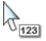 |
Click edits the dimension value. Note:
Alt+click edits the dimension formatting. Note:
Alt+click+drag creates a break line for eligible dimension text. 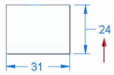 |
Cursor is over the dimension text. |
A PMI dimension value edit handle is displayed when you click the dimension text. 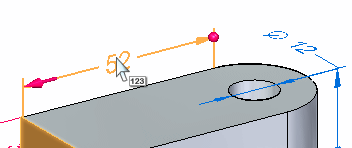 The dimension value edit handle consists of a Dimension Value Edit dialog box (1) and 3D arrow (2) and sphere (3) terminators. Resize the model by editing PMI dimension values 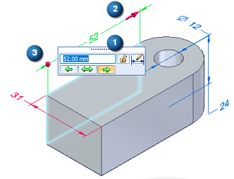 |
|
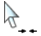 |
Drags a terminator inside or outside the projection lines. |
Cursor is over a dimension terminator. |
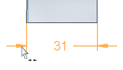 |
|
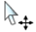 |
Click modifies the dimension properties. Note:
Alt+click edits the dimension value. |
Cursor is over a dimension line or projection line. |
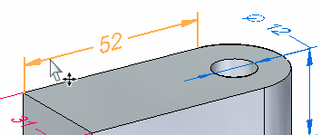 You can use the options on the Edit Definition command bar to modify the dimension properties, including tolerance, prefix, and orientation. 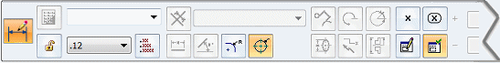 |
Using PMI edit handles to format PMI dimensions and annotations
PMI dimensions and annotations have color coded handles, which you can use to modify the display and positioning of a dimension or annotation. The location of the handle indicates what will change.
The handles are visible when you select a PMI dimension or annotation.
The handle colors are defined by the Handle 1, Handle 2, and Handle 3 colors on the Colors tab in the Solid Edge Options dialog box.
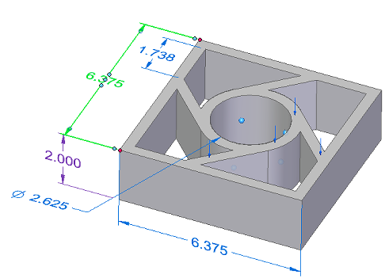
Edit handles for a PMI dimension (ISO standard) are a red connection handle (1), a dark blue terminator handle (2), and light blue edit handles (3).
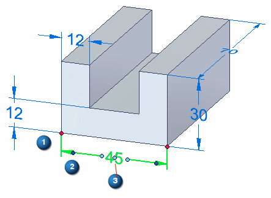
For an ANSI standard dimension, the same light blue edit handles are shown at (3a) and (3b), plus two more edit handles at (3c):
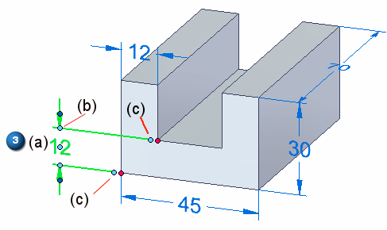
Edit handles for a PMI annotation with a leader and break line:
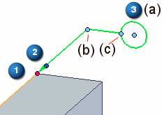
For an explanation of what the handles do, see the following table. To learn how to use the handles, see the help topic Reposition PMI text, lines, and arrows.
|
Handle name and location |
Purpose |
Does this |
|
(1) Connection handle |
Connects a PMI dimension projection line or annotation leader line to an element. Alt+drag disconnects the handle from the parent geometry. |
For a dimension, changes the length of the selected projection line. For an annotation, moves the start point of the leader along the connected element. |
|
(2) Terminator handle |
Modifies the selected terminator, dimension line, or projection line. Tip:
You also can use the Properties command on the shortcut menu to change formatting properties for font size, terminator type, projection line type, coordinate display, and more. |
Displays a menu of formatting commands:
|
|
(3)(3a) Edit handle—Move |
Moves dimension text. Moves an annotation freely. |
Drags the dimension text along the dimension line. For dimension text with a break line, changes the length of the break line and moves the dimension text to the opposite side of the dimension line. 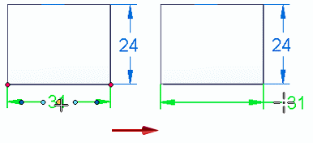 Moves the annotation by adjusting the leader length and orientation, without changing the break line length. 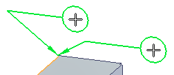 |
|
(3b) Edit handle—Dimension line or annotation leader |
Adjusts the length of a dimension line. Changes the annotation leader line orientation and length. |
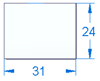 For annotations, displays snap lines for snapping the annotation to different orientations. 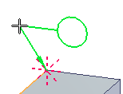 |
|
(3c) Edit handle—Dimension projection line or annotation break line |
Adjusts the length of a dimension projection line. Modifies a break line. Alt+drag changes the break line connection point to a balloon, callout, or feature control frame. |
Lengthens or shortens a projection line or a break line. 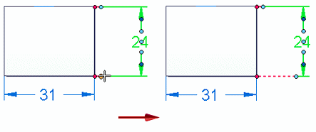 Flips an annotation and its break line to the opposite side of the leader. Alt+drag displays keypoints for you to snap the break line to a different connection point on the annotation. The new orientation of the break line is always perpendicular to the dashed line indicator. 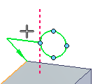 |
How do I
Display and edit PMI elementsAdd PMI dimensions and annotations
Select multiple reference elements
Create PMI dimensions from the assembly level
Place a PMI dimension using an intersection point
Set a PMI dimension and annotation plane
Show custom occurrence properties in PMI
Move PMI elements in 3D
Reposition PMI text, lines, and arrows
Copy PMI elements from a sketch or feature
Add or remove PMI elements in a model view
Learn more
PMI dimensions and annotationsPlacing PMI dimensions using intersection points
Look up more details
Lock Plane commandLock Dimension Plane command bar
Move Dimension command
Add To Model View command
Remove From Model View command